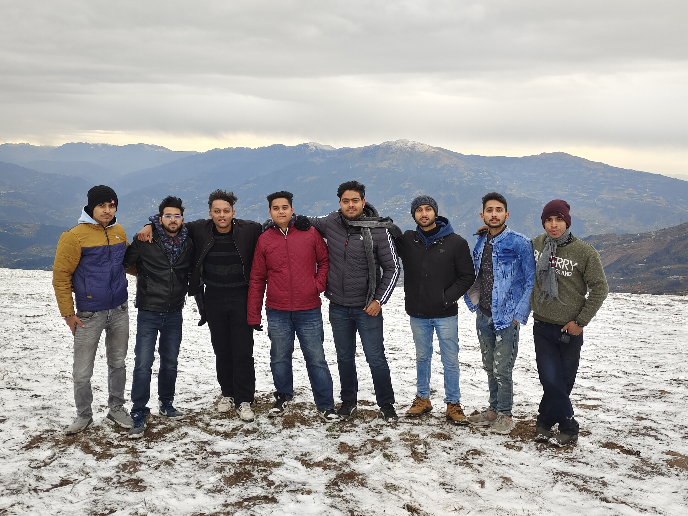
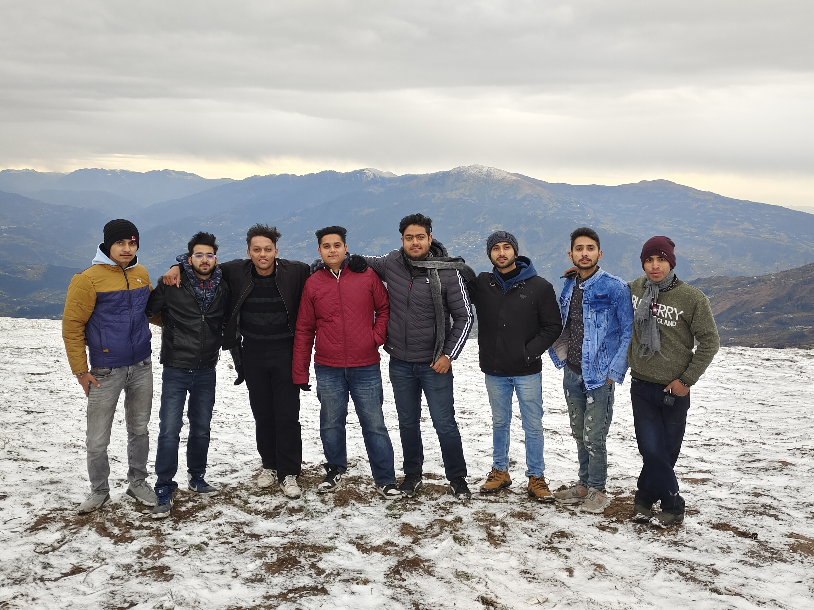

ABOUT ME
Hello! I am an aspiring web developer with a strong passion for continuous learning. Currently pursuing a B.E. in Computer Science and Engineering from GCET Jammu, I am eager to expand my knowledge and skills in the field of web development. With a solid foundation in programming languages like C, C++ and Java. Moreover, I am well-versed in web development technologies such as HTML, CSS, JavaScript, and jQuery, enabling me to create engaging and interactive user experiences.
I am constantly seeking new challenges and opportunities to enhance my expertise. Through self-motivation and a drive for excellence, I am committed to staying updated with the latest industry trends and best practices. I am eager to contribute my skills and work collaboratively in a dynamic team environment.
If you are looking for a dedicated and enthusiastic web developer who is always eager to learn and grow, I would be thrilled to connect with you. Let's collaborate and create impactful digital solutions together.


EDUCATION
Early Years at ASN Higher Secondary School:
My educational voyage began at ASN Higher Secondary School, where I completed my 12th grade. It was a transformative period where I gained valuable academic knowledge and developed essential life skills. Through the school's comprehensive curriculum, I was exposed to various subjects, broadening my horizons and nurturing my thirst for knowledge. I am proud to say that I achieved an impressive 86% in my 12th-grade examinations, a testament to my dedication and hard work.
Formative Years at BSF School:
Before my high school education, I attended BSF School, where I completed my 10th grade. This institution laid a strong foundation for my academic journey, instilling discipline and a love for learning. The school's nurturing environment and dedicated faculty played a vital role in my personal and intellectual growth. It was during these years that I discovered my passion for computer science, paving the way for my future studies and career aspirations.
Current Pursuit of B.E. at GCET JAMMU:
Presently, I am pursuing my Bachelor's degree in Computer Engineering from the esteemed GCET JAMMU (Government College of Engineering and Technology). This phase of my education has been an exhilarating rollercoaster ride filled with challenges and countless learning opportunities. The curriculum at GCET JAMMU is designed to develop well-rounded professionals, emphasizing both theoretical knowledge and practical application. Throughout my studies at GCET JAMMU, I have immersed myself in various subjects related to computer science, including programming languages, software development, and algorithm design.
Looking Ahead:
As I near the completion of my Bachelor's degree, I am eagerly anticipating the next chapter of my educational journey. My education has equipped me with a strong foundation in computer science, preparing me for the challenges and advancements in the ever-evolving technology landscape. I am excited to apply my knowledge and skills in practical settings, contributing to innovative projects and making a positive impact in the field.
| Education | INSTITUTION | YEAR | SCORE |
|---|---|---|---|
| Graduation | GCET Jammu | 2020-2024 | 8.9 CGPA |
| 12th | ASN Higher Secondary | 2019-2020 | 86% |
| 10th | BSF Senior Secondary | 2017-2018 | 80.2% |
HOBBIES
Sketching: A Canvas for Imagination:
For me, sketching is a form of creative expression that knows no bounds. With a pencil in hand and a blank canvas before me, I can bring my imagination to life. It is a therapeutic activity that enables me to relax, focus, and channel my artistic abilities.
Video Games: The Power of Virtual Adventures:
In the vast realm of video games, I find endless possibilities for exploration and excitement. Video games transport me to captivating virtual worlds, where I can embark on thrilling adventures, solve intricate puzzles, and immerse myself in captivating narratives.
Netflix: A Window into Captivating Stories:
In the era of streaming platforms, Netflix has become my go-to source for captivating storytelling. With a wide array of genres and series, I can dive into thrilling mysteries, indulge in heartwarming dramas, or explore the depths of science fiction
Football and Badminton: A Balance of Teamwork and Competition:
Sports hold a special place in my heart, and two of my favorites are football and badminton. Football, with its dynamic gameplay and strategic maneuvers, fosters teamwork and camaraderie.On the other hand, badminton challenges my agility, reflexes, and hand-eye coordination.
MOMENTS
 
